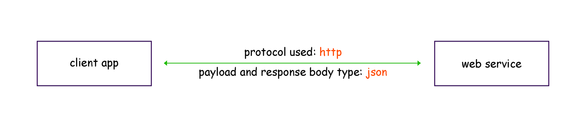
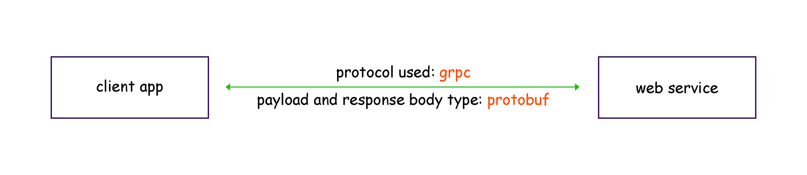
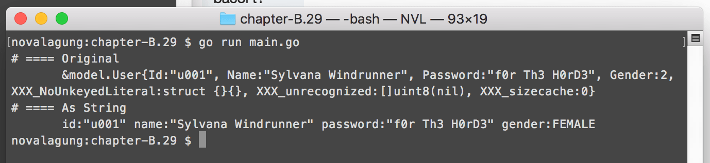
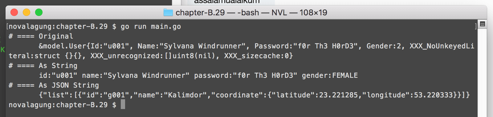
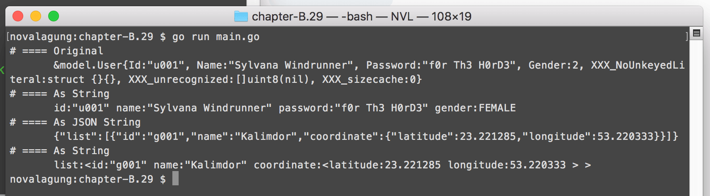

C.29. Protobuf
Pada bab ini kita akan belajar tentang penggunaan protobuf (Protocol Buffers) di Go. Topik gRPC kita pelajari pada bab selanjutnya (bukan pada bab ini).
C.29.1. Definisi
Protocol Buffers adalah metode untuk serialisasi data terstruktur, yang dibuat oleh Google. Protobuf cocok digunakan pada aplikasi yang berkomunikasi dengan aplikasi lain. Protobuf bisa dipakai di banyak platform, contoh: komunikasi antara aplikasi mobile iOS dan Go Web Service, bisa menggunakan protobuf.
Protobuf hanya bertugas di bagian serialisasi data saja, untuk komunikasi antar service atau antar aplikasi sendiri menggunakan gRPC.
gRPC adalah sebuah remote procedure call atau RPC yang dibuat oleh google. gRPC menggunakan HTTP/2 untuk komunikasinya, dan Protocol Buffers di bagian antarmuka-nya.
Mungkin sampai sini masih terasa abstrak, membingungkan, dan muncul banyak pertanyaan mengenai apa dan untuk apa protobuf ini. Agar lebih mudah untuk dipahami, bayangkan sebuah aplikasi client yang mengkonsumsi data dari (RESTful) web service, dengan data dikirimkan dalam bentuk JSON.

Di analogi sederhana di gambar, dijelaskan bahwa HTTP digunakan sebagai transport antara client dan server, dan JSON digunakan sebagai tipe data payload request dan response body type.
Arsitektur di atas (yang menggunakan http dan json) jika dikonversi ke bentuk gRPC dan protobuf, maka kurang lebih jadinya seperti gambar di bawah ini.

Cukup bisa dipahami bukan?
Sederhananya protobuf itu mirip seperti JSON atau XML, tapi lebih terstruktur. Perbedaannya adalah pada protobuf skema model harus didefinisikan di awal (schema on write).
Skema tersebut didefinisikan dalam file berekstensi .proto. Dari file tersebut di generate-lah file model sesuai bahasa yang dipilih. Misalkan bahasa yang digunakan adalah java, maka nantinya terbentuk pojo; misal bahasa adalah php nantinya class di-generate; jika bahasa Go maka struct di-generate, dan seterusnya.
gRPC dan protobuf adalah salah satu pilihan terbaik untuk diterapkan pada aplikasi yang mengadopsi konsep microservices.
C.29.2. Instalasi
Schema yang ditulis dalam .proto di-compile ke bentuk file sesuai bahasa yang dipilih. Dari sini jelasnya sebuah compiler dibutuhkan, maka dari itu protobuf harus install terlebih dahulu di lokal masing-masing. Compiler tersebut bernama protoc atau proto compiler.
Silakan merujuk ke http://google.github.io/proto-lens/installing-protoc.html untuk mengetahui cara instalasi protoc sesuai sistem operasi yang dibutuhkan.
Selain protoc, masih ada satu lagi yang perlu di install, yaitu protobuf runtime untuk Go (karena di sini kita menggunakan bahasa Go). Cara instalasinya cukup mudah:
go get -u github.com/golang/protobuf/protoc-gen-go
Wajib mengeksekusi command di atas di luar Go Modules, agar dependency tersebut binary nya tersimpan dalam $GOPATH/bin. Jika tidak, maka bisa muncul masalah (see https://stackoverflow.com/a/30097929/1467988).
Protobuf runtime tersedia untuk banyak bahasa selain Go, selengkapnya silakan cek https://github.com/protocolbuffers/protobuf.
C.29.3. Pembuatan File .Proto
Siapkan satu buah folder dengan skema seperti berikut.
mkdir chapter-c29
cd chapter-c29
go mod init chapter-c29
# then prepare underneath structures
tree .
.
├── main.go
└── model
├── garage.proto
└── user.proto
Folder yourproject/model berisikan file-file .proto (dua buah file proto didefinisikan). Dari kedua file di atas akan di-generate file model .go menggunakan command protoc. Nantinya generated file tersebut dipakai dalam main.go.
• File user.proto
OK, mari kita masuk ke bagian tulis-menulis kode. Buka file user.proto, tulis kode berikut.
syntax = "proto3";
package model;
enum UserGender {
UNDEFINED = 0;
MALE = 1;
FEMALE = 2;
}
Bahasa yang digunakan dalam file proto sangat minimalis, dan cukup mudah untuk dipahami.
Statement syntax = "proto3";, artinya adalah versi proto yang digunakan adalah proto3. Ada juga versi proto2, namun kita tidak menggunakannya.
Statement package model;, digunakan untuk menge-set nama package dari file yang nantinya di-generate. File user.proto akan di-compile, menghasilkan file user.pb.go. File Go tersebut package-nya adalah sesuai dengan yang sudah didefinisikan di statement, pada contoh ini model.
Statement enum UserGender digunakan untuk pendefinisian enum. Tulis nama-nama enum beserta value di dalam kurung kurawal. Keyword UserGender sendiri nantinya menjadi tipe enum. Value enum di protobuf hanya bisa menggunakan tipe data numerik int.
Setelah proses kompilasi ke bentuk Go, kode di atas kurang lebihnya akan menjadi seperti berikut.
package model
type UserGender int32
const (
UserGender_UNDEFINED UserGender = 0
UserGender_MALE UserGender = 1
UserGender_FEMALE UserGender = 2
)
Selanjutnya tambahkan statement pendefinisian message berikut dalam file user.proto.
message User {
string id = 1;
string name = 2;
string password = 3;
UserGender gender = 4;
}
message UserList {
repeated User list = 1;
}
Untuk mengurangi miskomunikasi, penulis gunakan istilah model untuk
messagepada kode di atas.
Model didefinisikan menggunakan keyword message diikuti dengan nama model-nya. Di dalam kurung kurawal, ditulis property-property model dengan skema penulisan <tipe data> <nama property> = <numbered field>.
Bisa dilihat bahwa di tiap field terdapat unique number. Informasi ini berguna untuk versioning model protobuf. Tiap field harus memiliki angka yang unik satu sama lain dalam satu
message.
Di dalam User, dideklarasikan property id, name, dan password yang bertipe string; dan juga property gender yang bertipe enum UserGender.
Selain User, model UserList juga didefinisikan. Isinya hanya satu property yaitu list yang tipe-nya adalah User. Keyword repeated pada property digunakan untuk pendefinisian tipe array atau slice. Statement repeated User adalah ekuivalen dengan []*User (tipe element slice pasti pointer).
Kode protobuf di atas menghasilkan kode Go berikut.
type User struct {
Id string
Name string
Password string
Gender UserGender
}
type UserList struct {
List []*User
}
• File garage.proto
Sekarang beralih ke file ke-dua, garage.proto. Silakan tulis kode berikut.
syntax = "proto3";
package model;
message GarageCoordinate {
float latitude = 1;
float longitude = 2;
}
message Garage {
string id = 1;
string name = 2;
GarageCoordinate coordinate = 3;
}
Bisa dilihat, property coordinate pada model Garage tipe-nya adalah model juga, yaitu GarageCoordinate.
Di atas, tipe data float digunakan pada pendefinisian property latitude dan longitude. Silakan merujuk ke link berikut untuk mengetahui tipe-tipe primitif apa saja yang bisa digunakan sebagai tipe data property model https://developers.google.com/protocol-buffers/docs/proto3#scalar.
Buat dua buah model lainnya berikut ini.
message GarageList {
repeated Garage list = 1;
}
message GarageListByUser {
map<string, GarageList> list = 1;
}
Selain array/slice, tipe map juga bisa digunakan pada protobuf. Gunakan keyword map untuk mendefinisikan tipe map. Penulisannya disertai dengan penulisan tipe data key dan tipe data value map tersebut.
Penulisan tipe data map mirip seperti penulisan HashMap pada java yang disisipkan juga tipe generics-nya.
Kembali ke topik, dua message di atas akan menghasilkan kode Go berikut.
type GarageList struct {
List []*Garage
}
type GarageListByUser struct {
List map[string]*GarageList
}
C.29.4. Kompilasi File .Proto
File .proto sudah siap, sekarang saatnya untuk meng-compile file-file tersebut agar menjadi .go. Kompilasi dilakukan lewat command protoc. Agar output berupa file Go, maka gunakan flag --go_out. Lebih jelasnya silakan ikut command berikut.
cd chapter-c29/model
PATH=$PATH:$GOPATH/bin/ protoc --go_out=. *.proto
tree .
.
├── garage.pb.go
├── garage.proto
├── user.pb.go
└── user.proto
0 directories, 4 files
Dua file baru dengan ekstensi .pb.go muncul.
C.29.5. Praktek
Sekarang kita akan belajar tentang pengoperasian file proto yang sudah di-generate. Buka file main.go, tulis kode berikut.
package main
import (
"bytes"
"fmt"
"os"
// sesuaikan dengan struktuk folder projek masing2
"chapter-c29/model"
)
func main() {
// more code here ...
}
Package model yang isinya generated proto file, di-import. Dari package tersebut, kita bisa mengakses generated struct seperti model.User, model.GarageList, dan lainnya. Maka coba buat beberapa objek untuk kesemua generated struct.
Objek struct
model.User:var user1 = &model.User{ Id: "u001", Name: "Sylvana Windrunner", Password: "f0r Th3 H0rD3", Gender: model.UserGender_FEMALE, }Untuk tipe enum pengaksesannya seperti di atas, penulisannya
model.UserGender_*. Cukup ubah*dengan value yang diinginkan,UNDEFINED,MALE, atauFEMALE.Objek struct
model.UserList:var userList = &model.UserList{ List: []*model.User{ user1, }, }Disarankan untuk selalu menampung objek cetakan struct protobuf dalam bentuk pointer, karena dengan itu objek akan memenuhi kriteria interface
proto.Message, yang nantinya akan sangat membantu proses koding.Objek struct
model.Garage:var garage1 = &model.Garage{ Id: "g001", Name: "Kalimdor", Coordinate: &model.GarageCoordinate{ Latitude: 23.2212847, Longitude: 53.22033123, }, }Objek struct
model.GarageList:var garageList = &model.GarageList{ List: []*model.Garage{ garage1, }, }Objek struct
model.GarageListByUser:var garageListByUser = &model.GarageListByUser{ List: map[string]*model.GarageList{ user1.Id: garageList, }, }
• Print proto object
Print salah satu objek yang sudah dibuat di atas.
// =========== original
fmt.Printf("# ==== Original\n %#v \n", user1)
// =========== as string
fmt.Printf("# ==== As String\n %v \n", user1.String())
Jalankan aplikasi untuk melihat hasilnya.

Pada statement print pertama, objek ditampilkan apa adanya. Generated struct memiliki beberapa property lain selain yang sudah didefinisikan pada proto message, seperti XXX_unrecognized dan beberapa lainnya. Property tersebut dibutuhkan oleh protobuf, tapi tidak kita butuhkan, jadi biarkan saja.
Di statement print kedua, method .String() diakses, menampilkan semua property yang didefinisikan dalam proto message (property XXX_ tidak dimunculkan).
• Konversi objek proto ke json string
Tambahkan kode berikut:
// =========== as json string
var buf bytes.Buffer
err1 := (&jsonpb.Marshaler{}).Marshal(&buf, garageList)
if err1 != nil {
fmt.Println(err1.Error())
os.Exit(0)
}
jsonString := buf.String()
fmt.Printf("# ==== As JSON String\n %v \n", jsonString)
Di atas kita membuat banyak objek lewat generated struct. Objek tersebut bisa dikonversi ke bentuk JSON string, caranya dengan memanfaatkan package github.com/golang/protobuf/jsonpb. Lakukan go get pada package jika belum punya, dan jangan lupa untuk meng-importnya pada file yang sedang dibuat.
go get -u github.com/golang/protobuf@v1.3.2
Kembali ke pembahasan, buat objek pointer baru dari struct jsonpb.Marshaler, lalu akses method .Marshal(). Sisipkan objek bertipe io.Writer penampung hasil konversi sebagai parameter pertama (pada contoh di atas kita gunakan bytes.Buffer). Lalu sisipkan juga objek proto yang ingin dikonversi sebagai parameter kedua.
Jalankan aplikasi, cek hasilnya.

Selain method .Marshal(), konversi ke json string bisa dilakukan lewat method .MarshalToString().
• Konversi json string ke objek proto
Proses unmarshal dari json string ke objek proto, bisa dilakukan lewat dua cara:
Membuat objek pointer dari struct
jsonpb.Unmarshaler, lalu mengakses method.Unmarshal(). Parameter pertama diisi dengan objekio.Readeryang isinya json string, dan parameter kedua adalah receiver.buf2 := strings.NewReader(jsonString) protoObject := new(model.GarageList) err2 := (&jsonpb.Unmarshaler{}).Unmarshal(buf2, protoObject) if err2 != nil { fmt.Println(err2.Error()) os.Exit(0) } fmt.Printf("# ==== As String\n %v \n", protoObject.String())Menggunakan
jsonpb.UnmarshalString, dengan parameter pertama disisipi data json string.protoObject := new(model.GarageList) err2 := jsonpb.UnmarshalString(jsonString, protoObject) if err2 != nil { fmt.Println(err2.Error()) os.Exit(0) } fmt.Printf("# ==== As String\n %v \n", protoObject.String())
Silakan pilih cara yang cocok sesuai kebutuhan. Lalu jalankan aplikasi dan lihat hasilnya.

C.29.6. gRPC + Protobuf
Pada bab selanjutnya kita akan belajar tentang penerapan gRPC dan protobuf.
- Protobuf, by Google, BSD-3-Clause License